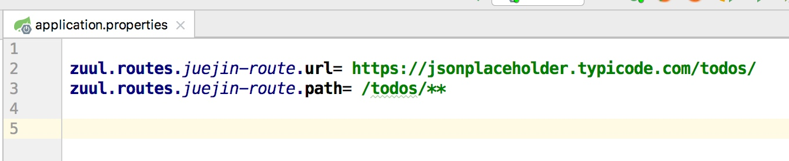
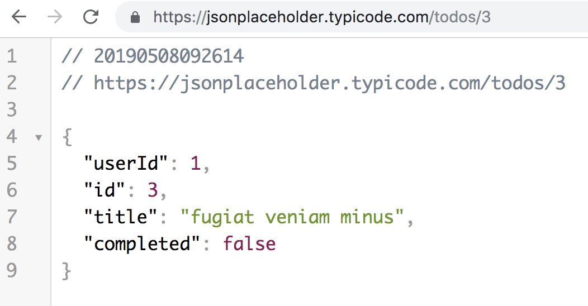
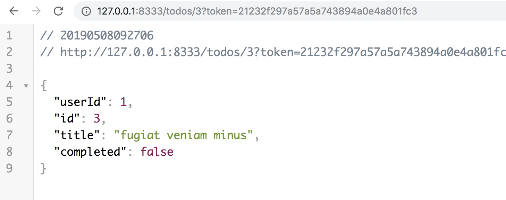
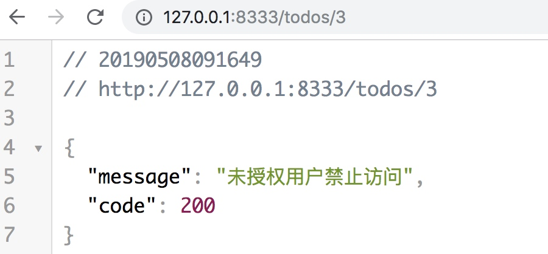

spring cloud zuul由大名鼎鼎的netflix公司开发，已经超越spring cloud gateway微服务网关系统，成为了Spring Cloud全家桶里排名第一的微服务网关系统了
网关作为所有应用系统的最前端，可以提供以下的价值
- 为后端微服务系统提供统一的入口
- 为后端微服务系统提供统一的授权机制
- 为后端微服务系统提供统一的认证机制
- 为后端微服务系统api提供统一签名校验机制
- 为流量入口添加日志记录
- qps统计
- 限流
完整代码已上传GITHUB，参考：https://github.com/neatlife/myzuul
创建网关项目
可以在https://start.spring.io/创建新的spring boot项目作为网关的骨架，比如

注意需要把Zuul网关组件添加进来，也可以手动添加，pom依赖如下：
<dependency>
<groupId>org.springframework.cloud</groupId>
<artifactId>spring-cloud-starter-netflix-zuul</artifactId>
</dependency>
代理后端服务
编辑Spring Boot main方法所在的主类，添加EnableZuulProxy注解，核心代码如下
@SpringBootApplication
@EnableZuulProxy
public class MyzuulApplication {
public static void main(String[] args) {
SpringApplication.run(MyzuulApplication.class, args);
}
}
然后在application.properties配置文件中配置代理的后端服务，比如代理这个服务 https://jsonplaceholder.typicode.com/todos/

这个服务可以直接访问效果如下：https://jsonplaceholder.typicode.com/todos/3

使用zuul代理访问效果如下

可以看到数据是完全一样的，网关只是起到了一个代理的作用
可以结合apollo配置中心实现自动刷新后端路由列表，参考: ZuulPropertiesRefresher.java
核心代码如下：
@ApolloConfigChangeListener(interestedKeyPrefixes = "zuul.")
public void onChange(ConfigChangeEvent changeEvent) {
refreshZuulProperties(changeEvent);
}
private void refreshZuulProperties(ConfigChangeEvent changeEvent) {
logger.info("Refreshing zuul properties!");
/**
* rebind configuration beans, e.g. ZuulProperties
* @see org.springframework.cloud.context.properties.ConfigurationPropertiesRebinder#onApplicationEvent
*/
this.applicationContext.publishEvent(new EnvironmentChangeEvent(changeEvent.changedKeys()));
/**
* refresh routes
* @see org.springframework.cloud.netflix.zuul.ZuulServerAutoConfiguration.ZuulRefreshListener#onApplicationEvent
*/
this.applicationContext.publishEvent(new RoutesRefreshedEvent(routeLocator));
logger.info("Zuul properties refreshed!");
}
过滤器系统
| 过滤器类型 | 过滤器执行时机 | 常见用法 |
|---|---|---|
| PRE | 在请求被路由之前调用 | 比如记录请求参数，认证 |
| ROUTING | 将请求路由到后端 | 比如请求dubbo搭建的后端服务 |
| POST | 在请求被路由之后调用 | 比如记录响应数据 |
| ERROR | 发生错误时执行该过滤器 | 比如给前端返回统一的报错json格式 |
web 系统
这个网关系统本身也是一个完整spring boot项目
可以编写控制器api，调用hibernate操作数据库等
比如在网关里编写登陆功能实现统一的授权功能
授权与认证
授权一般在网关里的控制器里实现授权的逻辑，授权一般可以指代登陆操作
认证一般在网关里的前置过滤器里实现，一般是检查是否登陆来决定是否允许访问网关后面的服务
网关登陆接口编写思路
流程代码如下
@PostMapping("/login")
public String login(@RequestParam(name = "username") String username,
@RequestParam(name = "password") String password
) {
String token;
// 到数据中检查用户名和密码是否合法
if ("admin".equals(username) && "admin".equals(password)) {
// 生成token，保存到redis中
token = "21232f297a57a5a743894a0e4a801fc3";
} else {
throw new RuntimeException("用户名或密码错误");
}
// 返回token给前端，用来认证使用
return token;
}
认证流程
使用pre类型的过滤器
流程代码如下
/**
* 认证
*/
@Slf4j
public class CertificationFilter extends ZuulFilter {
@Override
public Object run() {
HttpServletRequest request = RequestContext.getCurrentContext().getRequest();
// 到redis中检查token是否存在
if ("21232f297a57a5a743894a0e4a801fc3".equals(request.getParameter("token"))) {
return null;
}
throw new ZuulRuntimeException(new ZuulException("未授权用户禁止访问", 403, "token校验失败"));
}
@Override
public boolean shouldFilter() {
return true;
}
@Override
public int filterOrder() {
return 0;
}
@Override
public String filterType() {
return FilterConstants.PRE_TYPE;
}
}
就是普通的登陆接口，不过是把这个逻辑放到了网关里面
将请求的参数记录到日志
这样做的目的是在异常时可以通过日志找到请求参数
编写一个过滤器，获取请求参数并记录到日志中，核心代码如下
@Override
public Object run() {
HttpServletRequest request = RequestContext.getCurrentContext().getRequest();
Map<String, Object> parameters = getParametersFromRequest(request);
log.info("网关有新的访问, url: {}, method: {}, parameters: {}", request.getRequestURL(), request.getMethod(), parameters);
return null;
}
private Map<String, Object> getParametersFromRequest(HttpServletRequest request) {
Enumeration<?> parameterNames = request.getParameterNames();
Map<String, Object> parameters = new HashMap<>(16);
while (parameterNames.hasMoreElements()) {
String pName = (String) parameterNames.nextElement();
Object pValue = request.getParameter(pName);
parameters.put(pName, pValue);
}
return parameters;
}
完整代码参考：
统一错误返回格式
使用error过滤器可以实现
核心代码如下
@Slf4j
public class CustomErrorFilter extends ZuulFilter {
@Override
public Object run() {
RequestContext ctx = RequestContext.getCurrentContext();
// Remove error code to prevent further error handling in follow up filters
ctx.remove("error.status_code");
// block the SendErrorFilter from running
ctx.set("sendErrorFilter.ran");
ctx.setSendZuulResponse(false);
ctx.getResponse().setContentType("application/json");
ctx.getResponse().setCharacterEncoding("utf-8");
ctx.getResponse().setHeader("Access-Control-Allow-Origin", "*");
ctx.getResponse().setHeader("Access-Control-Allow-Methods", "*");
ctx.getResponse().setHeader("Access-Control-Allow-Age", "86400");
ctx.getResponse().setHeader("Access-Control-Allow-Headers", "*");
ctx.setResponseStatusCode(200);
StringWriter sw = new StringWriter();
ctx.getThrowable().printStackTrace(new PrintWriter(sw, true));
try {
ZuulException zuulException = (ZuulException) ctx.getThrowable().getCause().getCause();
ctx.getResponse().getWriter().write(
"{\"message\": \"" +
zuulException.getMessage() +
"\", \"code\" :" +
zuulException.nStatusCode
+ "}"
);
} catch (Exception e) {
log.error("写入异常到客户端异常, estring: {}", e.toString());
}
return null;
}
@Override
public boolean shouldFilter() {
return true;
}
@Override
public int filterOrder() {
return -1;
}
@Override
public String filterType() {
return FilterConstants.ERROR_TYPE;
}
}
注意需要加上以下设置
// 阻止别的错误处理过滤器再次对错误进行处理
ctx.remove("error.status_code");
// 阻止别的发送错误的过滤器对错误响应结果再次进行处理
ctx.set("sendErrorFilter.ran");
在浏览器中查看效果

zuul设置与调优
常用的调优参数如下:
连接池最大连接，默认是200
zuul.host.maxTotalConnections=1000
每个route可用的最大连接数，默认值是20
zuul.host.maxPerRouteConnections=1000
Hystrix最大的并发请求 默认值是100
zuul.semaphore.maxSemaphores=1000
hystrix熔断设置与调优
网关属于整个系统最前端的应用，同时又属于基础服务，和redis, mysql等基础服务一样，一般是不允许宕机的，可用性应该得到保证，保证可用性常用的技术就是使用降级熔断技术hystrix了
Hystrix 超时时间配置
配置默认的hystrix超时时间
hystrix.command.default.execution.isolation.thread.timeoutInMilliseconds=10000
配置特定方法的超时时间
hystrix.command.<hystrixcommandkey>.execution.isolation.thread.timeoutInMilliseconds=10000
hystrix.command.PressureService#getBalance(int).execution.isolation.thread.timeoutInMilliseconds=10000
一些注意的点
可以在前置过滤器中校验接口的签名，参考：简单API接口签名验证
网关里面登陆的用户需要和其它服务共享用户的登陆信息，可以把用户的信息存放到redis中进行共享
如果在开发过程中遇到问题，可加作者微信探讨